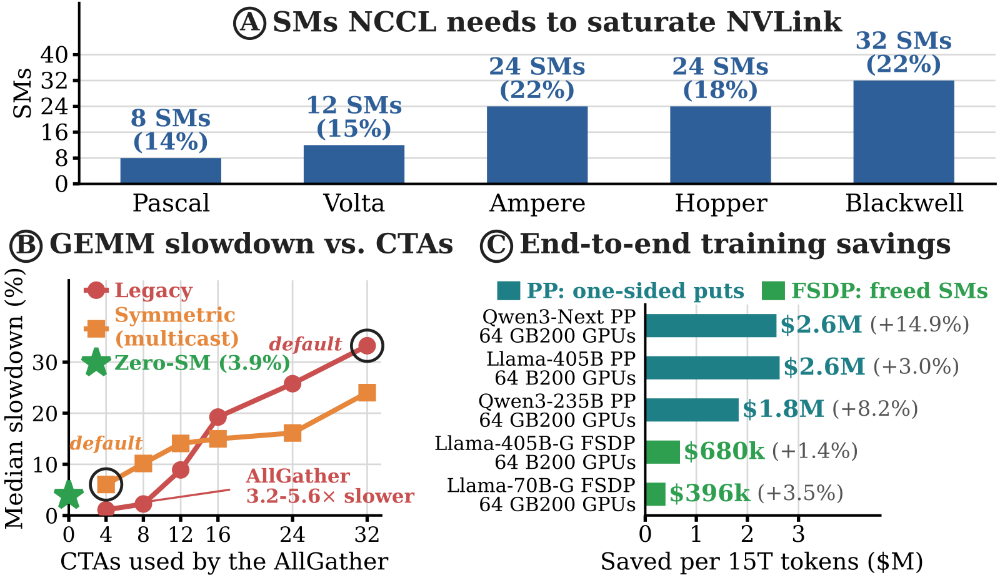
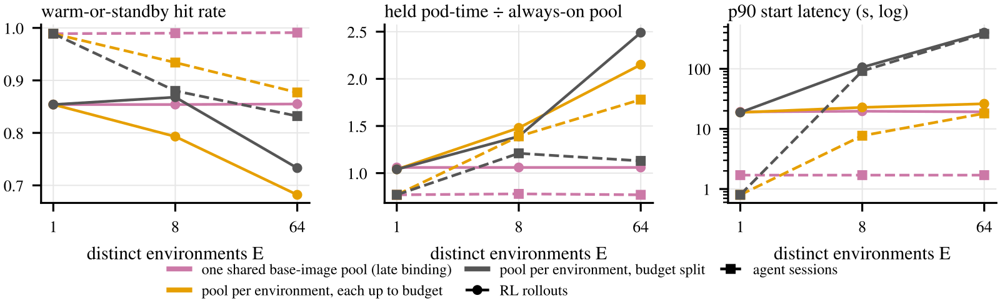
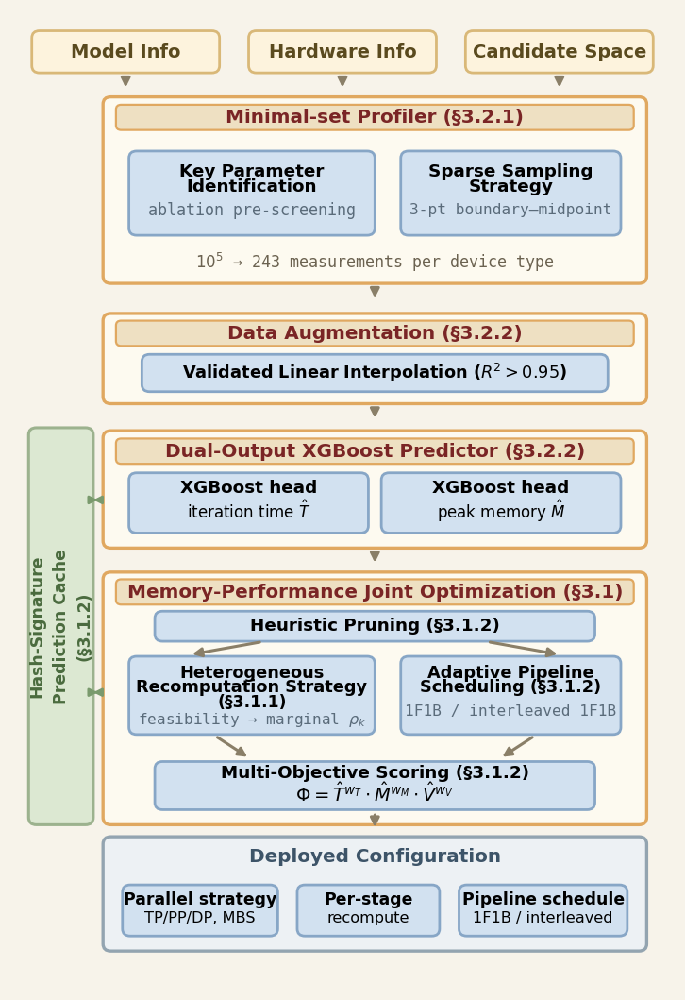
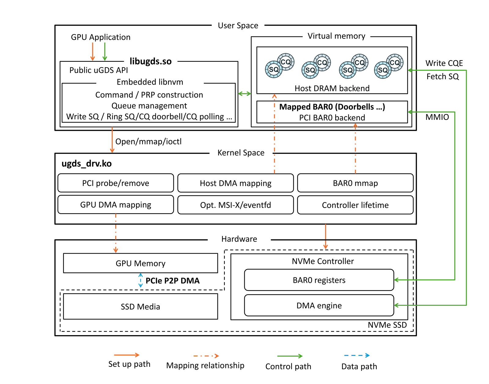

同一条队列上要发十六串互不依赖的写，合成一次提交之后慢在哪？你在写一个融合的专家分发内核：把一批 token 量化后发给托管对应专家的卡，再给每个对端送一个计数和一面就绪旗。如果走设备通信库，这里的每一次远程写都是一套完整手续：用原子操作预约队列槽、等更早的预约写完、做内存栅栏、按门铃通知网卡、稍后再去轮询完成。一条最小的 GPU 路径发 8 字节只要 0.7 微秒，库最多再叠上 4.6 微秒的发帖时间。
同一对端上往往不只一串。给几个专家发数据，各写各的，互不依赖，却还是各自付一遍预约和门铃。十六串叠在一起，只把 GPU 侧的发帖合并掉，也不一定能快起来。
Koç University 和 fal 的 Obaleth 把这类由 GPU 内核自己发起的通信，写进和计算同一个中间表示，再专门生成当前传输路径要用的设备代码。现有的 NVSHMEM，以及 NCCL GIN（NCCL 的 GPU 发起接口），提供可链进内核的通用设备函数，每次调用按通用情况处理预约、排序和完成；为混合专家（MoE）手写的 DeepEP 一类库，则针对一种通信模式和一组网卡自己调传输。Obaleth 做成 Triton 的编译插件，先把 put（远程写）、signal（发一个让对端看见的纪元）和 wait 降到与网卡无关的 Queue IR，再生成只含这条路径的代码。
这些选择在小消息上说明得最清楚。H100 上，8 字节消息最高到 NVSHMEM 的 3.3 倍、NCCL GIN 的 4.2 倍；256 卡 all-to-all 分别是 1.25 倍和 2.3 倍，每卡设备内存只要 22 MiB，对照库是 266–584 MiB。在 vLLM 里用 16 张 B200 跑 Qwen3-235B，回答比 DeepEP 快 1.15–1.29 倍。从每对端 64 KiB 起，交换被网卡带宽卡住，各库的设备接口从 1 MiB 起彼此相差不超过 4%。
库为什么每次都付全套手续
GPU 内核可以直接发起通信，不必先把控制交回主机。节点内部走 NVLink 上的负载和存储；跨节点则走 RDMA：提交方把工作队列项（WQE）写入发送队列，更新门铃记录，再敲一下网卡上的门铃寄存器。网卡随后取走这些项，把数据写到对端，必要时再写回一个完成队列项。
通用库要把任意调用者、任意线程几何、任意传输都照顾到，所以每一步都按最保守的方式做。Figure 1 把对比画得很直白：库为每次调用付一次预约、一次释放、一次门铃、一次完成；Obaleth 把整串命令合成各一次。

库付这些费用，是因为它看不见内核中间表示里的三件事。第一，这次调用后面还要发什么：发给同一对端的数据块、计数和旗可以收成一条链，发给不同专家的链互不依赖，计数还可以直接写进工作请求。第二，还有谁往同一条队列里写：如果每个对端只由一个程序负责，预约不必用原子操作，按门铃也不必等别的生产者。第三，缓冲区多久才会被覆盖：暂存槽如果每隔 P 次启动才重用，发送方只要在重用这个槽之前做一次完成轮询，确认网卡已经读完，不必每轮都等。
这些事实并不绑在某一个工作负载上。Obaleth 要做的，就是让编译器看见它们。
走一遍：十六条链，瓶颈怎样从 GPU 转到网卡
贯穿的例子来自论文 Figure 4 和 §5.3：在同一条 endpoint（从一个对端到另一个对端的操作流）上，有两条、乃至十六条互不依赖的链。只有用 token 声明过的依赖才会被排序，这些链之间没有这样的依赖。每条链都是一次数据写再跟一个 signal。下面按编译器实际施加的顺序走一遍。
第一步，先看单独一条链。编译器顺着每条 signal 的 after 依赖往回走，把整条链收成信号处的一次提交，以及这条链末尾 wait(token) 处的一次轮询。这里的 wait 等的是发送完成：源缓冲区可以被覆盖了，并不向接收方做保证。计算和后面几块的存储可以夹在这些写之间，只要整条链还在同一个块、同一条 endpoint 上，中间没有阻塞。在 mlx5 网卡上，N 条命令从此只付一次预约、N 个连续的工作队列项、一次门铃，以及最多一次完成。
第二步，把十六条独立的链合并成一次提交。它们共享一次预约、一次释放、一次门铃和一次完成，各自仍保留自己的 signal。更早的链会被更晚才宣布出去，这是允许的，因为这些链本来就互不排序。合并之后，GPU 侧的发帖时间从 41.5 微秒降到 3.5 微秒。可整轮只从 43.8 微秒降到 39.8 微秒。GPU 已经不是瓶颈了，网卡才是。
第三步，看网卡在等什么。跟在传输后面的 signal 是 strong 的：它不但写出一个纪元，还要保证前面的数据对接收方可见。在 mlx5 上，每条这样的 signal 都是一个排序点，网卡要等这条 signal 前面的数据落地，才继续往后执行。远程原子操作和带栅栏的写，论文测到都大约 2.3 微秒。若按链排列，写成「写 1、信号 1、写 2、信号 2……」，每条 signal 前面都还夹着下一块要发的数据，十六条链就会停十六次。
第四步，把全部数据写排到所有 signal 前面。每条 signal 仍然跟在自己那份数据后面，可见性没有丢。网卡在第一条落到数据后面的 signal 处，会等到前面全部数据写都落地；再往后的 signal 前面已经没有未完成的数据写，所以整次提交只停一次。十六链的整轮时间从 39.8 微秒降到 4.3 微秒。这一步需要队列本身是有序的；在 AWS（亚马逊云）的 EFA（弹性结构适配器，一种可靠但无序的网卡传输）上，编译器改为先收回数据、再发布纪元，会多一次往返。

消融对得上这条路径。默认通过打开时，十六条链比全部关掉快 23.9 倍。去掉合并会同时关掉排序，这一下就慢 5.8 倍。单链时故事不同：每轮都等完成才是大头，完成规划把发送方的等待推到缓冲区真正要被覆盖的时候。八卡 all-to-all 里，每个对端每轮只有一次写和一次 signal，可开关的通过只再贡献 1.13–1.22 倍，多出来的优势主要来自始终开启的降码：用直线代码给每个对端发一次已批好的写和信号。 Hoot 说
正文已经走完十六条独立链如何合成一次提交、再把数据写排到信号前面，让网卡只停一次。这里走另一件事：一条链上的 wait(reuse=2)。源每隔 2 轮才被覆盖，完成规划和纪元省略（只在要做完成的那一轮和最后一轮才发出信号）会改写这 2 轮里的轮询和网卡停顿。下面的数字都来自论文。
wait(reuse=2) 声明每隔 2 轮才重用 → 完成规划把轮询收成每 k=2 轮一次 → 纪元省略只在完成轮发出信号 → 单链上完成规划贡献 76% 的加速，发帖不再占时间后拿掉省略会慢 2.4 倍
- 逐轮请求完成的库基线 → 两轮轮询两次Figure 9 的库基线是每轮都请求完成：这条循环每轮都是一次 put 再跟一个 signal，wait(reuse=2) 说明源每隔 2 轮才被覆盖。若调用者每轮都请求完成，库就每轮做一次完成轮询，两轮里有 2 次轮询；每条跟在传输后面的 strong signal 仍是一个网卡排序点，两轮里网卡停 2 次，而 Obaleth 按声明的重用间隔规划轮询。作为逐轮请求完成的基线：第 0、1 轮有完成轮询 2 次，网卡停顿 2 次
- 完成规划 → 每 k 轮才轮询一次完成规划把 wait 收成每 k 轮一次轮询，k 取不超过重用间隔、队列里能放下的轮数、以及网卡偏好间隔（mlx5 和 EFA（弹性结构适配器）上是 16）的最大 2 的幂，所以 reuse=2 时 k=2。提交只在窗口最后一条命令上要一次完成队列项，mlx5 上这一次会退休前面的命令。k=2：2 轮只轮询 1 次、要 1 次完成；网卡停顿仍是 2 次
- 纪元省略 → S0 改成空操作循环仍每轮有一个 strong signal，也就仍有一个网卡排序点；纪元省略只在要做完成的那一轮和最后一轮才发出信号，其余轮改成同样大小的空操作，所以第 0 轮的 S0 变成空操作，只留下第 1 轮的 S1。这是允许的，因为接收方的 wait_signal（等到至少一个纪元）可以接受最多晚 k−1 轮才看到纪元，而一条 strong signal 也会让更早的数据可见；若内核会等待对端，这一步会跳过。k−1=1，网卡停顿从 2 次减到 1 次
- 单链消融 → 完成规划占大部分收益在一条链的流上，默认通过比全部关掉快 8.4 倍，其中完成规划贡献了 76%。按流水线顺序加入纪元省略时，瀑布图上的增益只有 7%，因为这时 GPU 侧发帖仍占时间；等发行分析（issuer analysis）和 GPU 范围的门铃把发帖费用拿掉之后，网卡排序点变成瓶颈，默认配置里再拿掉纪元省略会慢 2.4 倍。单链 8.4 倍里，完成规划占 76%；发帖不再占时间后，拿掉省略慢 2.4 倍
所以在 reuse=2 这条链上，完成规划先把两次完成收成一次；纪元省略再把第一次信号改成空操作，让网卡只在最后一次信号处停一次。

出处
论文 §5.3、Appendix Figure 9。wait(reuse=2) 表示源每隔 2 轮才被覆盖；k 是不超过重用间隔、队列深度和网卡偏好间隔（16）的最大 2 的幂。和通用库、手写专家库比，快在哪
H100 平台是每节点四卡，节点内走 NVLink，跨节点走 200 Gb/s InfiniBand。这套机器不允许 GPU 直接按门铃，所以 Obaleth 和对照库都在 GPU 上建好队列和工作项，只把门铃交给主机线程转发。评测里 NVSHMEM 用的是 3.4.5，因为 3.8.0 在这套机器上每个往返要再慢 2.1 微秒。
两点之间的往返，Tier-2（在 Triton 内核里直接组合这些操作）在 8 字节时是 9.98 微秒，NCCL GIN 是 12.74，NVSHMEM 是 13.12。消息率上，64 个线程块、每块一条队列时，Tier-2 的 8 字节发送达到每秒 2.43 亿条，是 NVSHMEM 的 3.3 倍、NCCL GIN 的 4.2 倍，因为它每个窗口只按一次门铃，库是每次 put 按一次。
All-to-all 里，每张卡和节点内三个 NVLink 对端交换，其余走 RDMA。每对端 256 字节时，8 卡上比 NVSHMEM 的打包集合快 1.32 倍、比 NCCL GIN 快 1.52 倍，因为这一档还在付每条消息的固定开销；256 卡上分别是 1.25 倍和 2.3 倍。每对端 16 KiB 时，总线带宽是 NCCL GIN 的 1.6 倍、NVSHMEM 的 1.2 倍。从每对端 64 KiB 起，搬数据的时间压过了每条消息的固定开销，所以各库的设备接口从 1 MiB 起彼此相差不超过 4%。

资源占用也更小，是因为运行时只为队列和端点描述符留内存。8–256 卡规模上，Obaleth 每卡只分配 4–22 MiB；NCCL 是 266–426 MiB，NVSHMEM 是 584 MiB，其中 512 MiB 是它在每张卡上都映射的对称堆，不管用了多少。All-to-all 的 RDMA 内核每线程用 60 个寄存器，对照库是 128，说明专门生成的路径不必带上通用库的全部分支。
这些领先在能直接按门铃的 B200 上仍然在，只是对 NCCL GIN 的差距收窄了：16 和 32 卡、每对端 256 字节时，Tier-2 比 NCCL GIN 快 1.11–1.16 倍，比 NVSHMEM 快 1.24–1.52 倍。这说明 H100 上对 NCCL GIN 更大的优势，有一部分来自对方把门铃交给主机转发。
放到推理里，作者用 384 行适配器把 Obaleth 接进 vLLM 的专家并行，只陈述 vLLM 已经知道的配置：token 上限、隐层大小、top-k、专家放置、数据类型，以及专家内核怎么读输入。没有为这个负载再手写或手调通信内核。Qwen3-235B-A22B 在 16 张 B200 上走 EP16（专家并行度 16），和 DeepEP 2.5.0 的默认配置比，结果如下。
| 请求速率（每秒） | 1 | 2 | 4 |
|---|---|---|---|
| 回答时延（秒，Obaleth / DeepEP） | 5.66 / 7.31 | 6.50 / 8.29 | 8.10 / 9.29 |
| 加速比 | 1.29 倍 | 1.28 倍 | 1.15 倍 |
| 每输出 token 时延（毫秒） | 21.9 / 28.7 | 25.9 / 33.2 | 33.4 / 37.3 |
| 首 token 时延 p95（毫秒） | 376 / 192 | 312 / 218 | 311 / 201 |
加速主要出现在 decode，因为每一步交换很小、受延迟限制，每输出 token 时延低 10–24%。编译出的计划容量是 1 个 token，每个对端一条队列，每阶段 4 条命令；DeepEP 保留 128 条进度通道，空的也更新，所以在 Ling-1T 的三步 decode（同样是专家并行度 16）里，Obaleth 的网卡少发 5.6 倍的包，发送和等待内核的 GPU 时间是 DeepEP 的分发与合并的 1/4.3。首 token 时延的 p95 更差，是对方的 1.4–2.0 倍。从 64 个 token 起，Qwen3-235B 上 DeepEP 的手写内核最多快 1.7 倍，论文把这笔代价归到编译出来的内核上。
这对做 GPU 通信和专家并行的人意味着什么
如果现有 CUDA 或 CuTe 内核已经在调库，可以用 Tier-1：编译器一次只看见一个操作，生成一份按传输路径和 GPU 专门裁过的单边设备库，仍按对端选择路径，对静态已知的对端分支会被折掉。想让编译器看见计算和通信怎么接在一起，就要写 Tier-2 的 Triton 内核，像论文里的融合 FP8 分发那样。
Issuer analysis 是一个典型的「编译器看见了才省得掉」的点。多线程往同一条队列写时，每个线程都要用原子操作预约槽位，写完工作项还要等更早的预约都写好才能按门铃。库不能排除这种情况，于是每次调用都付这笔费用。Obaleth 每次提交由该程序里的一条线程发布。它再检查传给 endpoint 的索引：如果表里的选择都是程序号的一一对应，就不会有两个程序选中同一条队列，于是每条队列只有一个发行线程，预约变成普通加法，按门铃前那次等待也可以去掉。不做这个分析时，单链流会慢 1.6 倍，乒乓每个往返再慢 1.7 微秒。NCCL 把同样的快路径做成需要程序员申请的独占上下文；这里是从中间表示推出来的。
框架侧也可以只描述模式：有哪些逻辑缓冲区、它们之间怎么传、计算阶段会改哪些区域。存储规划按专家内核真正读到的范围给缓冲区定大小，每张 GPU 收回 16 GiB，KV cache 容量比关掉该通过多 45%，和 DeepEP 相差不超过 5%。有效范围只发送仍活着的行，发出的字节少 58%。
融合并不自动更快。Listing 1 那种把打包和发送写在同一个内核里的形式，在 8 张 H100 上是分离打包内核的 0.78–0.93 倍（BF16），带 FP8 量化时是 0.44–0.82 倍，说明打包和发送挤在同一内核里并不总是划算。上面的 vLLM 数字也只用了一种专家并行配置，速率并没有打满任一引擎；Qwen3-235B 的两个张量并行 8 卡副本，在长报告上的吞吐是这条 Obaleth 路径的 2.4 倍。
局限
大消息时这条路径没有额外优势：从每对端 64 KiB 起，交换已经被网卡带宽卡住。库在几乎没有什么可批、可完成的地方仍然领先，比如只有一个线程块，或者一条不用完成的纯流——那里 NVSHMEM 可以从每条队列的 128–256 个线程发帖，Tier-2 只从一条线程发。
推理侧，首 token 时延的尾部更差。完整的 AMD 和 EFA 评测还没有做；作者在 MI355X 上给出了初步数字，有通过的 GPU 直连流比关掉通过快 3.8–5.7 倍，完整对照留待后续。这篇是预印本。
读完这篇，你觉得
夜读鸮记下了，谢谢你的反馈。
点一下即可，无需登录；再点一次撤回。只统计匿名次数，不记录你是谁。
相关论文RELATED

Infra · 2026-11-17Zero-SM NCCL: A Systematic Guide to Designing and Deploying SM-Free GPU CommunicationGPU 通信库常用计算单元来搬数据和做同步，互联带宽越高，挤占计算的代价越大。作者改用拷贝引擎和由 CPU 代理发起的网络传输来完成集合通信，不再为此启动计算核。在新一代高带宽互联系统上，重叠的矩阵乘法被拖慢的中位数从约 33% 降到 3.9%，AllGather 带宽最高可提高 1.36 倍，但单次操作延迟会更高。用到训练里，全分片数据并行和流水线并行都见到过加速，但作者强调这不是处处都赢。不是所有通信量都适合从计算单元上拿下来。大块传输、计算已经打满的任务，以及气泡较大的流水线更划算，小消息和受主机拖累的任务反而会亏。对训练框架里叠加通信的人来说，要按消息大小和瓶颈在哪决定要不要关掉计算核上的通信。
Infra · 2026-11-11Firepool: Brokering Warm GPU Capacity for Agentic and RL Workloads at LinkedInagent 和 RL 训练会连续发出几千个只跑几秒的 GPU 任务，可是起一个 Pod 即使镜像已缓存也要等二三十秒，等待压过了干活。常见解法各缺一块：缓存镜像省不掉调度和初始化，常驻的 Ray 集群在两步之间白占 GPU，备好的空闲 Pod（热池）又常因环境对不上而用不上。LinkedIn 的 Firepool 让同一硬件规格的 Pod 共用一个基础镜像，代码和依赖等任务开始时才装进去，Pod 就能互换。为了隔离，Pod 只复用给上次用它的调用者，换调用者时由同一张卡上不占显存的备用 Pod 接手。线上高峰期 94.7% 的 Pod 请求由热池或备用 Pod 满足。在两张 GPU 的配额下，agent 循环的完成速度是每个任务新建 Pod 的 13 倍，任务一长优势就消失。跑 agent 评测或 RL 时，先量清楚 Pod 等待占了多少时间。
Infra · 2026-11-03MemX: Memory-Aware Automatic Parallelism for Cross-Vendor Heterogeneous GPU Training在多家厂商 GPU 混在一起的集群上训练大模型，MemX 把各卡显存均不均衡也写进搜索目标，并且允许显存小的卡多做重算、显存大的卡不做，从而找到既不 OOM、各卡显存又均匀的并行配置。它给每个候选配置估迭代耗时、峰值显存和各卡显存方差，按权重合成一个分数，分数最小的胜出。在三厂商集群上，按耗时和按显存均衡两种排序，只有它都把真实第一名排在第一；在线搜索 31,240 个配置只要 26.5 秒。它换来的是显存余量，不是更快：实际部署时它挑的配置比最快配置慢 9.3%。混合集群里显存和算力不成比例，搜索目标里必须有显存。
Infra · 2026-10-25uGDS: A User-Space Development Kit for High-Performance GPU Direct Storage用 NVIDIA 的 GDS 把数据从 SSD 直接读进 GPU 显存时，作者实测发现，异步读取 99.6% 的时间都卡在提交请求这一步。大模型推理服务会把算过的 KV cache 存到 SSD 上，下次遇到同样开头的请求就直接读回来，不用重算，这一步的速度直接影响首字延迟。uGDS 把指挥 SSD 干活这件事从操作系统内核搬到普通程序里来做。数据照样从 SSD 直达 GPU，变的是谁来下命令。uGDS 批量读的速度最高是 GDS 的 12 倍；接进开源缓存系统后，长提示的首字延迟中位数从 1.9 秒降到 0.7 秒。
讨论
欢迎补充实验细节、复现经验或不同看法。需 GitHub 登录。
正在加载讨论…